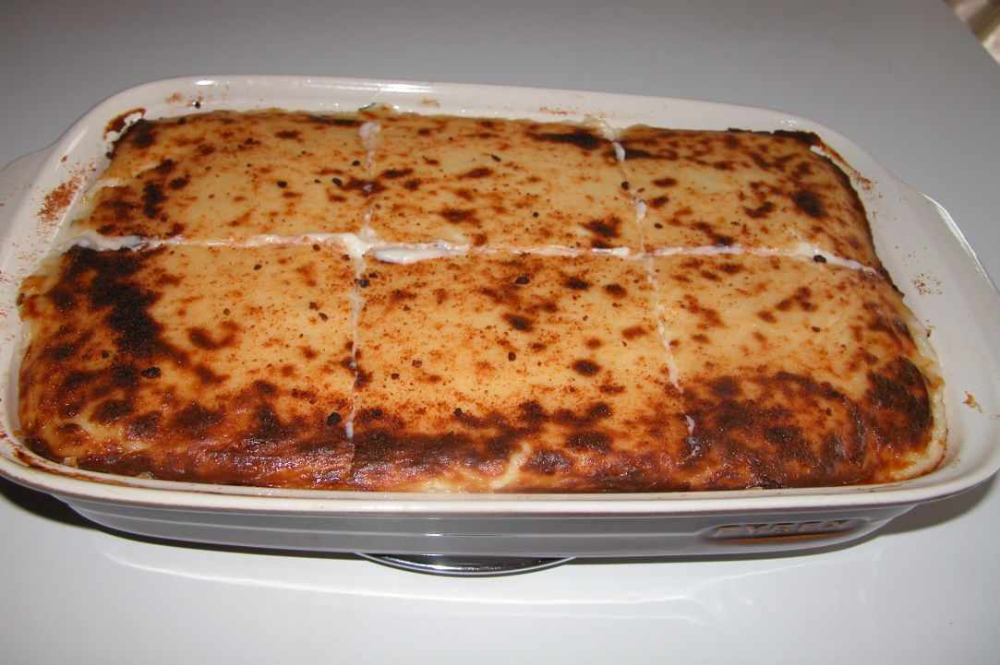

Pastitsio

DESCRIPTION
This is a recipe for pastitsio aka makaronia tou fournou in Cyprus. The main difference with the greek version, is the use of halloumi cheese.
Copied by this page.
INGREDIENTS
Mince sauce
- 1/4 cup olive oil
- 2 brown onions, diced
- 2 garlic cloves, minced
- 1 kg pork mince
- 2 1/2 tbs dried mint
- 1 1/2 tsp salt
- 1/4 tsp black pepper
- 1/2 tsp cinnamon
- 1 tsp ground cumin
- 1/2 cup water
- 1/4 cup white wine
- 20 parsley, chopped
Pasta
- 500 g penne
- boiling water, amount as per packet
- pinch of salt
- 50 g halloumi, grated
Bechamel
- 1.25 L warm milk see notes
- 125 g unsalted butter
- 125 g plain flour
- 150 g halloumi, grated
- 1/8 tsp black pepper
Finish
- 1/8 tsp ground nutmeg optional
- 25 g halloumi, grated
STEPS
Mince sauce
- Heat a large frying pan and add the olive oil to sautee the onions. Once they have softened a bit add the garlic and pork mince. Break the mince using a wooden spoon and allow it to brown.
- Once that is done add the mint, salt, pepper, cinnamon and cumin; stirring for 2min before adding the wine and water.
- Allow the mince to cook for 15-20min or until the liquids are reduced. After that mix in the parsley and set aside.
Pasta
- While the mince is cooking start cooking the pasta as per packet instructions but reduce the cooking time by a couple of minutes.
- Drain the water and if you are not ready to assemble at this stage then drizzle a bit of olive oil in the pasta to prevent them from sticking together.
Bechamel sauce
- While the mince and pasta are cooking, use a separate pot that holds at least 2L of liquid and place it on a medium heat. Add the butter in the pot and allow it to completely melt.
- Stir in the flour using a whisk and once it is well combined then slowly add a cup of the warm milk. Stirring well with the whisk.
- Repeat the process by adding another cup of the milk and letting the bechamel to thicken each time before pouring more in. Keep stirring so that there are no lumps formed.
- Continue the process until all the milk is finished then stir in the halloumi and pepper.
End
- Preheat the oven to 200degree fan forced. Aim to have all three components ready at the same time by starting to cook the pasta and the bechamel sauce while the mince is getting cooked.
- Use a medium baking tray (mine is 30cm long, 27cm wide and 5cm deep) and start assembling the layers by adding half the pasta on the bottom and sprinkle halloumi (25g) on top.
- Stir in the mince sauce a cup of the bechamel sauce. Then spread the mince mixture on top of the pasta.
- Continue by adding the other half of the pasta with grated halloumi on top (25g) and then carefully pour the bechamel sauce all over the top. Sprinkle more halloumi (25g) on top and some nutmeg before placing it in the oven. Allow it cook for about 20-25min or until the top layer is golden brown.
- After that time take the tray out and allow it to cool for an hour or so before cutting so that the pasta holds together. If you are too hungry or in a rush, no problem just use a large spoon to scoop as much as you like on your plate.
Return to Home